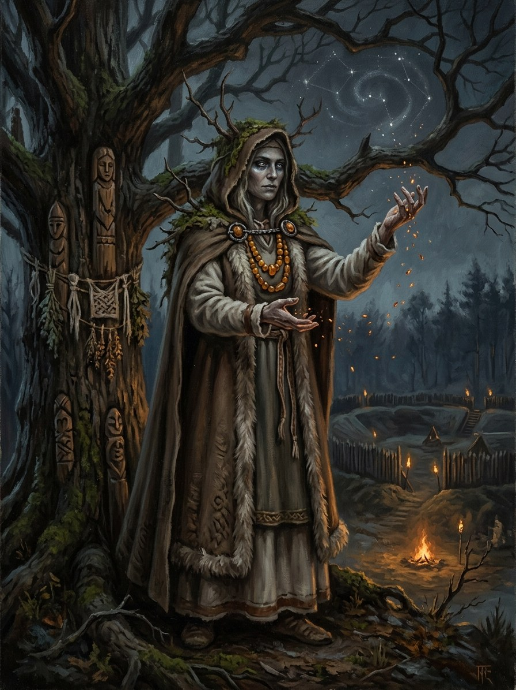

Praurimė¶
Tautosakos šaltiniai [Istoriniai duomenys]¶
Praurimė is said to be the goddess of the sacred fire, served by vaidilutės. She is the most doubtful of the saga’s gods. The name is not in Łasicki, the Volhynian Chronicle, Prätorius or the early lists; the standard source is the 19th-century mythographer Teodor Narbutt (1835), whose reconstructions are often called inventions, and Vėlius and others discard many of his names. Stryjkowski (1582) does describe a perpetual fire in the Vilnius valley, and Dusburg a priest-kept fire at Romowe, but neither names Praurimė. Modern writers often equate Praurimė with Gabija and disagree about which the priestesses served. Her etymology is unknown. The saga’s vaidilutė as a vestal of an eternal flame is also shaped by Romantic historiography, though sacred fires themselves are attested (Długosz).
Praurimė

Praurimė · god¶
Tipas |
dievybė |
Pastaba |
Doubtful: known mainly from 19th-century mythographers (Narbutt); authenticity disputed. The saga keeps her as the Stars element. |
Sagoje¶
Domain: the fire of the stars, the sky-twin of the eternal flame. Element: Stars („Žvaigždės tau švytės“), zenith Kūčios (winter-solstice midnight). Force-face: none. Folk memory has her as a goddess of sacred fire, while the saga’s seers know her as the fire above, the stars read as the threads Laima spins. Both are true (Cosmology §3.1).
Book I ch. 3 is her textbook scene: Birutė opens a shutter at Dagotuvės, off her zenith, and sees a ship that „might not appear“; „Praurimė shows always a possibility, not a doom“; the cost is doubled, blindness of two or three days. Ch. 9: „the icy vault of Praurimė’s night“ as Kęstutis’s torch fades. Ch. 15: the Five-Voice ends in „the cold brightness of Praurimė’s eyes“. Book V ch. 29 at Kūčios: „Praurimė shone highest, and the price was half. Half. Still everything.“ Costs: hours of blindness, or days of it, or a beloved face lost from memory. Limits: impossible under overcast and doubled in daylight.
Aukos ir draudimai¶
Kūčios is the seer’s night: shadows on the wall, firelight in amber, the lots. A starry sky is the medium; no altar. Rule (Law of Truth): ask only for what you truly want, or you get nothing, or what you do want.
Tarimas¶
prow-RIH-may (IPA [prɐʊˈrʲɪmʲeː]), stress prau-RI-mė.
Ryšiai
Element: Žvaigždės (Stars)
Domain The fire of the stars; the sky-twin of the eternal flame
Layer God (Layer I) · the saga's seers know her as the fire above, the stars read as Laima's lit threads
Element Stars, Žvaigždės tau švytės · zenith Kūčios, winter-solstice midnight
Force-face None
Offerings None. A starry sky is the medium; no altar. Kūčios is the seer's night: shadows on the wall, firelight in amber, the lots
Taboos Asking for what you do not truly want (Law of Truth): you get nothing, or what you do want
Signs The cold brightness of her eyes at the end of a Five-Voice; a vision that shows a possibility, not a doom
Clear Sight. Seeing at distance, through time as possibility and never certainty, and into the truth. Every vision shows the seer something about herself.
Against illusion. A Praurimė seer can see through the Shadow-Seller's illusions.
Overcast. Impossible under cloud, and doubled in daylight.
A fixed trunk. Prophecy shows branches, not fate.
Blindness. Hours for a minor working, days for a major one, or the permanent loss of one beloved face from memory.
Off zenith. Doubled. Birutė's vision at Dagotuvės cost two or three days (Book I ch. 3). At Kūčios, half (Book V ch. 29).
Sąsajos¶
graph LR
el_stars["Žvaigždės (Stars)"]
praurime["Praurimė"]
praurime -->|Element| el_stars
style praurime stroke-width:3px